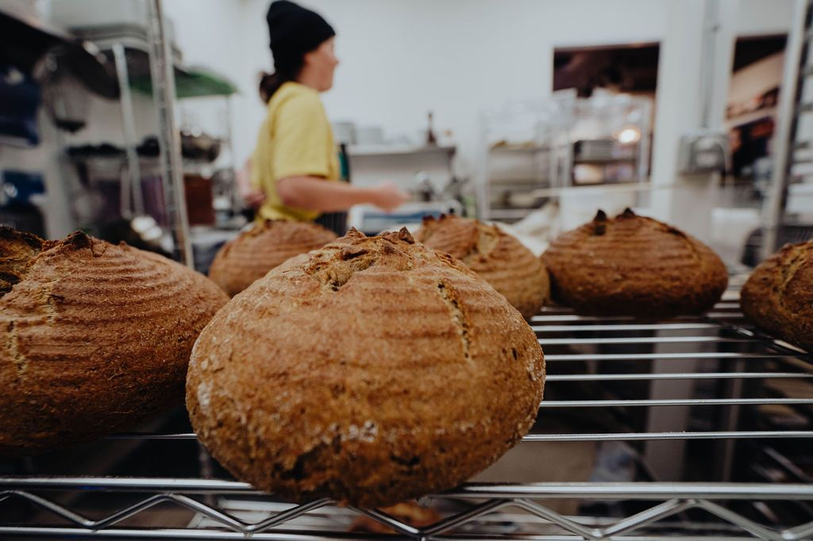
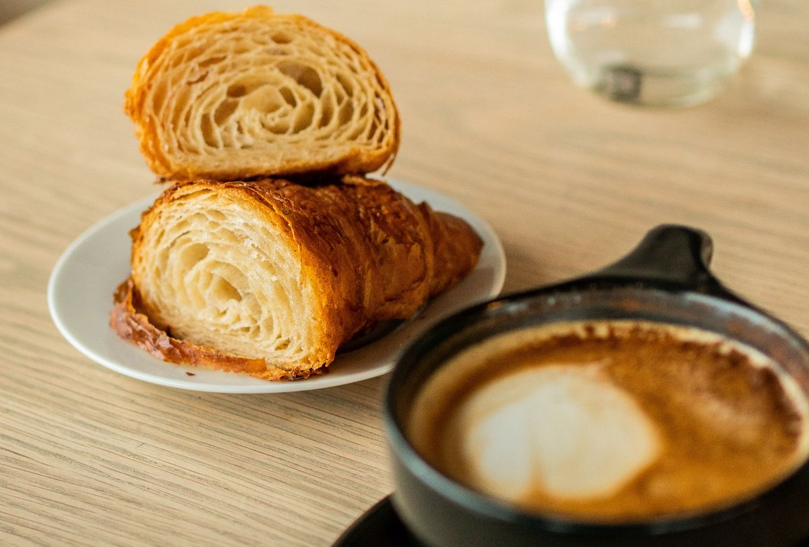
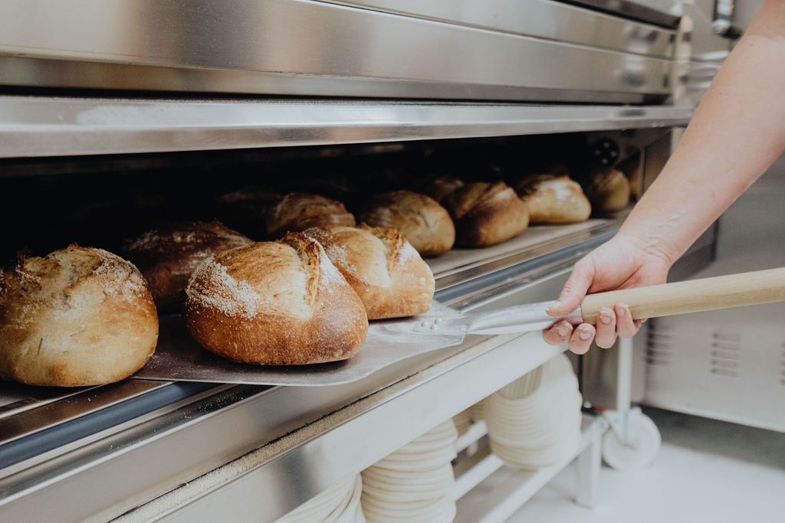
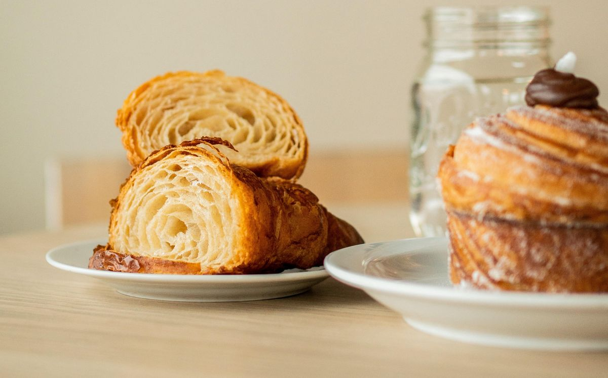
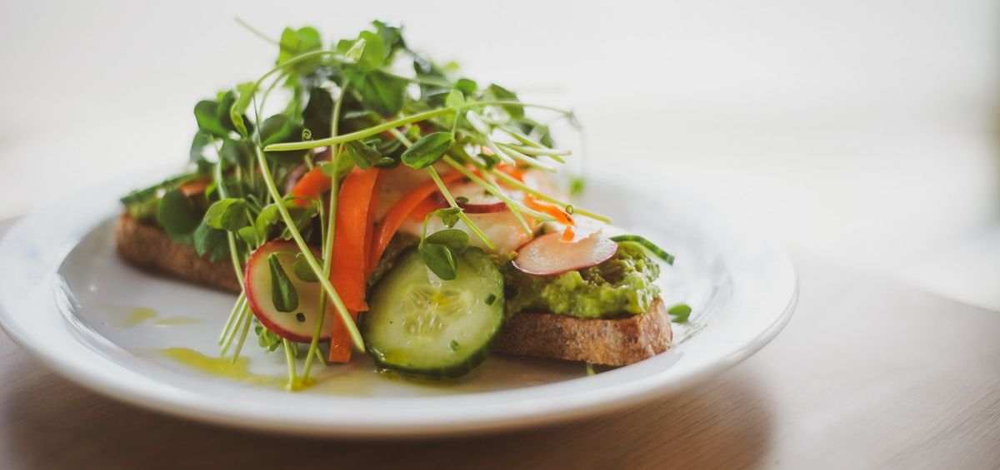
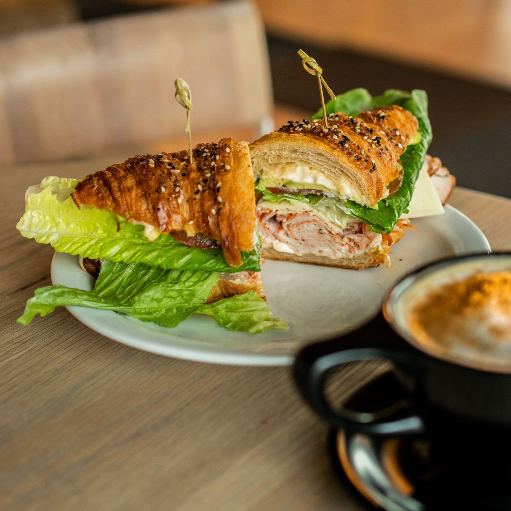
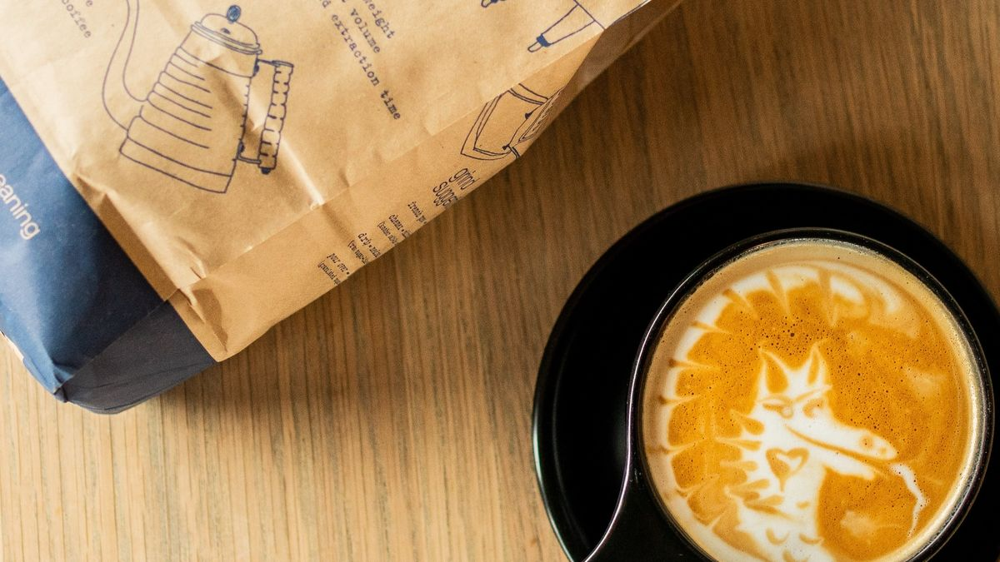
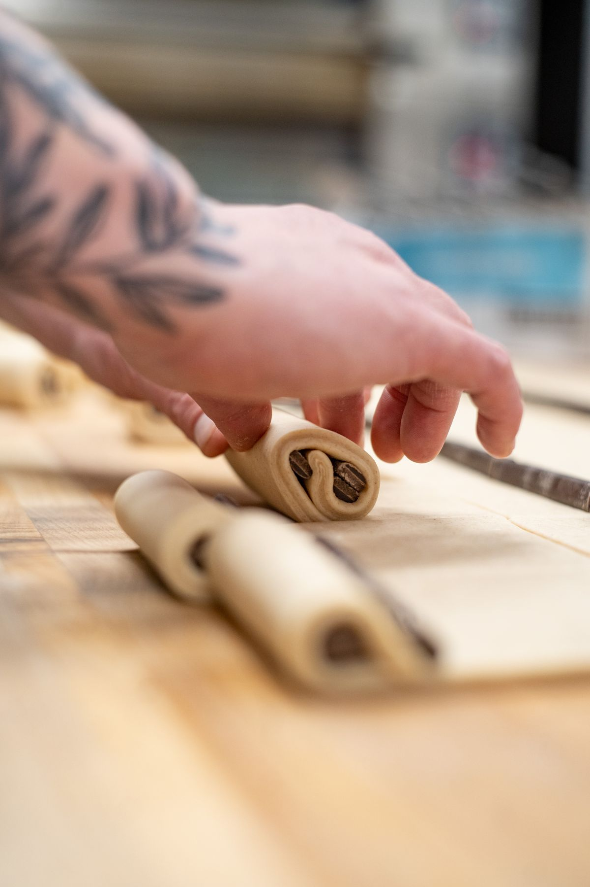
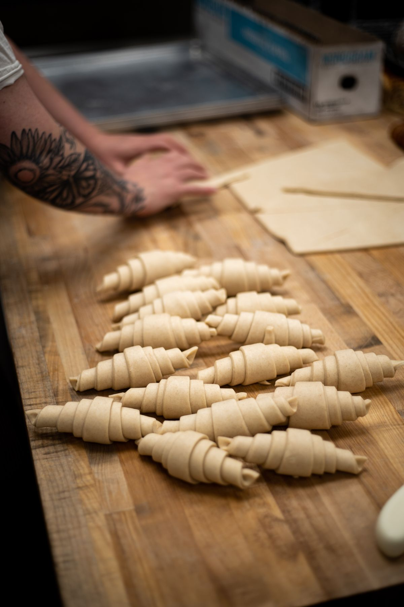

Quiche with simple salad $15
Seasonal variety. Takes 15 minutes.
Open daily 8 to 3 · 329 N First Ave, Sandpoint


The bakery
Jill Severson opened Bluebird in October 2019. The flour is stone ground at two Washington mills, and the produce comes from farms like Pack River and Mountain Cloud. The daily bake is out of the oven within an hour and a half of opening.

Loaf $10. Baguette $5. Baked every day:
Rye, olive and challah come out on certain days. The schedule is below.

Seasonal pastries and desserts rotate in.
Bread schedule
The five daily breads are baked every morning. These are the extras.
Monday
Rye
Tuesday
Daily breads
Wednesday
Olive
Rye
Thursday
Daily breads
Friday
Rye
Challah
Saturday
Olive
Sunday
Daily breads
The flour comes freshly stone ground from Cairnspring Mills and Bluebird Grain Farms in Washington. Nothing added, nothing bleached, and the bran and germ stay in.


Kitchen
Seasonal variety. Takes 15 minutes.
Sliced avo, shaved veg and a poached egg.
Capers and dill ricotta, shaved veg, togarashi oil.
Scrambled eggs, green onion, toast and jam.
Scrambled eggs, cheddar and green onion with bacon, ham, or avocado and Mama Lil's. Egg and cheese only, $15.
Scrambled egg with cheddar, green onion, ham, bacon, avocado, Calabrian chili aioli.
Turkey, avo, mayo, cheddar, lettuce and tomato.
Za'atar goat cheese, roasted beets, avo, cucumber, Mama Lil's pickled peppers, pea shoots.
Spicy chicken and pepperjack, warmed, with chipotle aioli, tomato and red onion on telera.
Your bread (baguette, ciabatta, telera, brioche or daily sliced) and your meat (ham, turkey or spicy chicken). Mayo, Fat Pig mustard, cheddar, lettuce, tomato.
Seared Olympia Provisions mortadella, burrata, heirloom tomato, garlic aioli and turnip greens on house brioche.
Coffee and drinks
Organic coffee roasted by Doma in Post Falls. Teas are from Rishi.
| Drink | 8oz | 12oz | 16oz |
|---|---|---|---|
| Drip | 2.50 | 3.00 | 3.50 |
| Americano | 3.00 | 3.50 | 4.00 |
| Latte | 4.25 | 4.50 | 4.75 |
| Mocha | 4.50 | 5.00 | 5.75 |
| Chai latte | 4.25 | 4.50 | 5.00 |
| Matcha | 4.50 | 5.00 | 5.50 |
| London fog | 4.00 | 4.50 | 5.00 |

Add .75
House-made syrups: vanilla, caramel, chocolate, white chocolate, lavender, hazelnut and a seasonal one. Coconut, oat or almond milk. An extra shot.
Rishi teas
Earl Grey, English Breakfast, Yuzu Peach Green, Jade Cloud Green, Jasmine Green, Peppermint, Turmeric Ginger, Chamomile, Blueberry Hibiscus.
Also
Upside Kombucha, milk, orange juice, sparkling water, beer, champagne and mimosas.
Our story
Before the storefront, Jill Severson baked bread at home and sold it at the Sandpoint Farmers' Market. She opened Bluebird in October 2019.
Jill grew up in Thousand Oaks, California. She studied pastry at The French Culinary Institute and bread at the International Culinary Center in New York, and worked at Jacques Torres Chocolate while she was in school. Then came more than a decade in Seattle at Mistral Kitchen, The Essential Baking Company and The Fairmont Olympic Hotel, and a stint as pastry chef at Majestic Valley Wilderness Lodge, a heli-ski lodge in Glacier View, Alaska.
She moved to Sandpoint for a smaller town and more time outside. When she's not at the bakery she's snowboarding, out on a boat or camping.

Partners
Jill moved here to be part of a small community, so the bakery buys close to home wherever it can.
Special orders
We need two days' notice and payment up front. Call or stop in.
We don't make cakes. For those, try The Cakery on First.
Gift cards are at the counter.
Hours
The daily bake is out of the oven within an hour and a half of opening.
